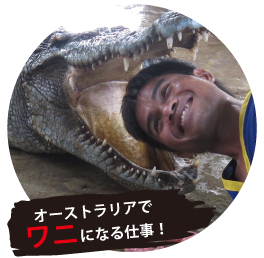
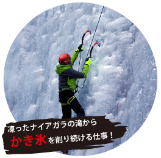
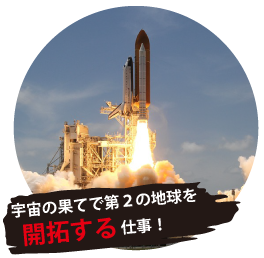
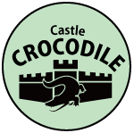
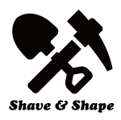
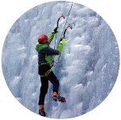
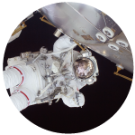

世界で活躍したい人のための求人掲示板！
JOKE BOARD
  JOKE BOARD が厳選してお届けする
今週の超オススメ求人情報！！
【未経験者歓迎】オーストラリアでワニになる仕事
動物園のワニって時々、
妙に人間っぽい仕草をすると思ったことありませんか？
それもそのはず！実は中にちゃんと人間が入っているんです！
ワニスーツを着てワニ園の中を歩き回り
時々口を開けたり、水に浸かったりするだけでOK ！
本物のワニとコミュニケーション研修も行うので初めてでも安心！
≪水泳・競泳経験者優遇！！≫
お仕事情報
| お 仕 事 内 容 |
ワニスーツを着て、ワニを演じる仕事です。先輩からの演技も指導ありから、初心者でも安心！ 日によってワニショーや、スタッフからの餌付けに参加していただきます。 ワニの中には稀に本物も含まれますので、事前にワニとのコミュニケーション研修を行います。 |
|---|---|
| 給 与 | 時給17 USD ~ / 来園者の満足度でボーナス支給あり |
| 勤 務 時 間 | 08:30 ~ 17:30 （休憩1ｈ / 業務に応じて残業多少あり） |
| 休 日・休 暇 | シフト制 （月 10 日休み ※自己申告制で休みが取りやすい！） |
| 応 募 資 格 | ★未経験者歓迎！ ★性別・年齢・経験は一切問いません！ ★水泳・スポーツ経験者優遇！体力に自信のある方はぜひ！ |
| 勤務地情報 | 先輩の声 | ||
|---|---|---|---|
|  |
オーストラリア最大規模のワニ園 Castle CROCODILE 場所：オーストラリア - ダーウィン |
ありえない仕事！でも毎日が充実！ | |
| たくさんのワニや爬虫類、魚類が飼育されています。ワニに餌をやったり、 子ワニやその他の爬虫類を抱っこして写真を撮ったりしてお楽しみいただけます。 迫力のワニ体験が、あなたを待っています！ | ワニになりきる仕事だなんて最初は半信半疑でしたが、 現場で真剣にワニになりきる皆さんを見たら、 自分も頑張ろうという気持ちが沸き上がりました！ このアルバイトを経験したことで、自分の行動に自信が持てるようになったと思います！ | ||
※Castle CROCODILE というワニ園は、架空の存在です。
※一般的なワニ園には、ワニを演じるキャストはいません。（多分）
【冬季限定】ナイアガラの滝でかき氷を削り続ける仕事
【冬季限定！高額時給！】
冬の期間凍ってしまうナイアガラの滝から氷を削り
観光客向けの『かき氷』を作るお仕事です。
場所を選んで作業することができるから、
体を動かすのが苦手な人でも大丈夫！
短期集中の仕事なので、ワーキングホリデーの期間中に
お金を貯めたい人におすすめです！
お仕事情報
| お 仕 事 内 容 | 冬の期間は寒さで凍りつくナイアガラの滝。 そこから削り取られた氷で作られたかき氷が、現地で大人気なのをご存知ですか？ 自分で削った氷にシロップをかけて、そのままかじりつくのもOKです！ アイスクライミングの実習を受けることが出来るので、プロ顔負けの技術が身に付きますよ♪ |
|---|---|
| 給 与 | 時給15 USD ~ ◎高所・滝の中腹部などの作業をする場合は特別手当あり |
| 勤 務 時 間 | 基本：15:00 ~ 22:00 （休憩１ｈ） ◎その他、4時間以内のお仕事も有 ◎希望の時間帯をご相談ください |
| 休 日・休 暇 | 自己申告制 ◎自由にスケジュールを組むことが出来ます！ |
| 応 募 資 格 | ◎未経験者大歓迎！ ◎フリーター / 既婚者 / 学生…みなさん歓迎！ ◎体力に自信がある方！ |
| 勤務地情報 | 先輩の声 | ||
|---|---|---|---|
|  |
数々の賞を受賞している削氷企業 株式会社 Shave & Shape 場所：カナダ - トロント |
 | スリリングな作業が病みつき！ |
| カナダでも有名な削氷企業。氷を削って作る作品、アイスアートを専門に、 幅広いジャンルで注目を浴びています。ナイアガラかき氷プロジェクトには１０年以上前から関わってる古参企業です。 | アルバイトをしながらアイスクライミングのテクニックも磨けるので、アイスクライミングが好きな人にはおススメ！ アイスクライミングをしたことがない人でもで働けるエリアがあるので、誰でも挑戦できますよ | ||
※株式会社 Shave & Shape は、架空の企業です。
※冬季に凍りつくナイアガラの滝は大変美しいので、是非観光に行ってみてください！
宇宙、それは最後の開拓地。
ついに見つかった第２の地球を、
私たちと一緒に開拓してみませんか？
最新の宇宙望遠鏡が発見した、11光年先にある「Earth 2.0」。
そこに派遣するスタッフを募集しています！
誰よりも早く新惑星へ降り立ち、
人類がその星へ移住できるよう準備をすすめましょう！
お仕事情報
| お 仕 事 内 容 | 新惑星「Earth 2.0」へ降り立ち、当企業のスタッフと共に新惑星の開拓を行います。
空気環境・水質・土壌の調査から始め、住居の作成、水路の確保、食べ物の栽培まで発展させます。 基本的には現地での永住となりますが、本人が希望すれば期間に応じて地球へ帰還することも可能です！ |
|---|---|
| 給 与 | 月給 4,500 USD～ （給与は指定された銀行口座に振り込まれます） |
| 勤 務 時 間 | 最低5年間勤務 ※終身雇用制度あり ※長期出張が前提ですので、ご注意ください |
| 休 日・休 暇 | シフト制（休日自己申告制） |
| 応 募 資 格 | 年齢：18歳以上 性別：制限なし ※入社前に学力・体力テストを受けていただきます。 |
| 勤務地情報 | 先輩の声 | ||
|---|---|---|---|
|
宇宙開発企業 MASA 航空宇宙局 場所：アメリカ - ワシントンDC |
 | 自慢できる！自分だけができる仕事！ | |
| 「宇宙空間の開拓、科学的発見、そして最新鋭機の開発において、 常に世界の先を行け」をモットーに、マサシ代表が立ち上げた宇宙開発企業。 | 宇宙飛行士の仕事がインターネットで申し込めるようになるとは、時代は変わったものですね。 あなたの一歩は小さな一歩かもしれませんが、人類にとっては偉大な一歩となります。 人生をかけて挑んでいただく価値があります！「第2 の地球も青かった」と、世界に発信しましょう！ | ||
※MASA 航空宇宙局は、架空の企業です。
※「Earth 2.0」は実際に発見された、地球と構造が最も似ている新惑星です。